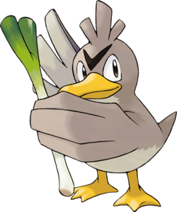

CANARTICHO's FAN CLUB
Comment devenir un canarticho assez stylé
Comment devenir un canarticho assez stylé
Etape 1 : Choisir son poireau

Le poireau constitue l'âme de tout canarticho qui se respecte. Voici nos conseils pour vous aider à choisir le poireau qui VOUS correspond :
- Choisir un poireau bien mûr
- Eviter les diamètres inférieurs à 5 mm
- Tester la flexibilité de votre poireau
- Tailler votre poireau en pointe pour plus d'aérodynamisme
Pour savoir si vous avez fait le bon choix, paradez comme le montre l'image ci-dessous :

Vous avez votre poireau? Félicitations! Il ne vous reste plus qu'à danser le twerk à la manière de Nicky Minaj.
Voilà comment danse un vrai canarticho